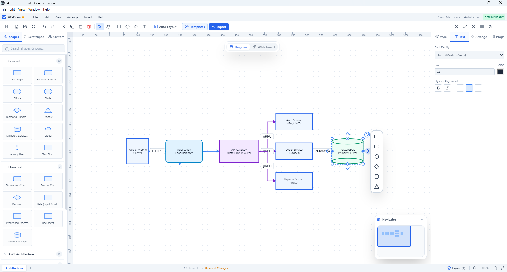

1 / 5
An independent open-source Windows desktop alternative to diagrams.net powered by maxGraph, React 19, and Electron 34—combining precision engineering diagrams, freehand whiteboarding, and 36 shape libraries with zero telemetry.

Every tool needed by software architects, systems engineers, and product designers—running natively offline on Windows.
Direct @maxgraph/core integration with infinite pan, pixel/metric rulers, snap-to-grid, 8-point resize handles, and smart connectors that stay anchored as shapes move.
Includes Flowcharts, UML 2.5, BPMN 2.0, ER Diagrams, AWS, Azure, Google Cloud, Kubernetes, Docker, Networking, UI Wireframes, plus personal Scratchpad libraries.
Switch effortlessly between structured technical diagramming and freehand ideation with pen, highlighter, eraser, stroke weights (2px/4px/8px), and color-coded sticky notes.
Reorganize complex graphs instantly using Hierarchical, Compact Tree, Circular Ring, Radial, or Organic Force-Directed algorithms across multi-page tabs and lockable layers.
Full right-hand inspector for gradient fills, dashed strokes, opacity, corner radius, drop shadows, typography (8–72px), smart alignment, distribution, and group/ungroup controls.
Runs completely air-gapped with zero tracking, analytics, or third-party CDNs. Uses Electron context isolation and atomic local filesystem writes via secure IPC bridges.
Step through real screenshots of VC-Draw in action—from cloud microservices diagrams to freehand whiteboarding.
Your diagrams belong to you—never locked in a proprietary cloud format. Open existing .drawio XML files, parse Mermaid flowchart syntax or CSV datasets directly into connected graphs, and export crisp deliverables.
.drawio, .xml)
graph TD) & CSV node/edge import
Familiar desktop hotkeys across diagramming, grouping, zooming, and file management. Press F1 inside the app anytime for the full reference.
Built with production-grade TypeScript tooling, isolated Electron runtime security, and crisp vector rendering.
Powered by @maxgraph/core v0.11 with React 19, TypeScript, Zustand 5 state management, Lucide icons, and Tailwind CSS 3.
Secure context isolation with atomic local persistence via Electron IPC bridges, tested with Vitest and packaged for Windows via Electron Builder (NSIS + Portable).
Generate multi-format outputs on-device using jsPDF for documents, clean scalable SVG, standalone HTML viewers, and up to 4x PNG/JPEG snapshots.
Designed and architected VC-Draw to deliver an independent, open-source, 100% offline alternative to cloud diagramming tools—combining tactile UX craftsmanship, maxGraph vector performance, and strict local privacy.
VC-Draw is currently under testing and final QA. Both the Windows NSIS Installer (VC-Draw Setup 1.0.0.exe) and Portable Executable will be available soon under the MIT License.